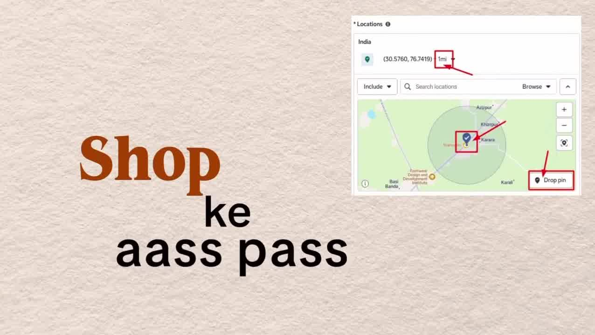

Meta-Ads · Location-Targeting
Competitor Geo-Hijacking: The Burger King Geofencing Playbook via Meta Ads Pin-Drop
Key Takeaways
- Intent-Validated Traffic: Instead of spending budget educating top-of-funnel cold audiences, competitor geo-hijacking targets consumers who have already demonstrated high purchasing intent by physically visiting or dwelling at competitor locations.
- The "Whopper Detour" Case Study: Burger King erected a 600-foot virtual geofence around 14,000 McDonald's locations across the United States. Whenever a customer walked into a McDonald's, the BK app triggered an instant push notification unlocking a Whopper burger for $0.01 (1 cent), driving over 1.5 million app downloads in 9 days.
- Meta Ads Pin-Drop Setup: Marketers can legally replicate this playbook without custom mobile app geofencing SDKs by using Meta Ads Manager's coordinate pin-drop feature with a tight 1-mile radius centered on competitor storefronts, corporate offices, or industry trade expos.
- The Irresistible Counter-Offer Formula: Creative served to this audience must not be generic brand awareness; it must deliver a high-contrast comparison offer (e.g., immediate discount, superior warranty, faster turnaround) addressing an active buyer on-site.
The Economics of Competitor Geo-Hijacking
In performance marketing, the single most expensive phase of customer acquisition is creating purchasing intent. Competitors with established retail footprints, flagship stores, or luxury showrooms invest massive capital to generate foot traffic. Geo-hijacking leverages competitor location dwell-time as a high-intent targeting filter.
How to Implement in Meta Ads Manager
While enterprise apps use proprietary GPS geofencing SDKs, small businesses, digital agencies, and e-commerce brands can execute this strategy directly within Meta Ads Manager:

Step-by-Step Configuration:
- Extract Competitor GPS Coordinates: Open Google Maps, right-click on the competitor's physical retail store, dealership, clinic, or corporate campus, and copy the latitude and longitude (e.g.,
50.5760, 76.7419). - Select "Drop Pin" in Meta Ads: In the Ad Set location module, choose "People living in or recently in this location" (or "Recently in this location"). Paste coordinates or click Drop Pin directly on the map.
- Set Minimum Radius (1 Mile): Tighten the boundary circle to the minimum allowed radius (1 mile / 1.6 km).
- Layer Negative Exclusions: If your own store is nearby, add an exclusion pin around your own perimeter to prevent serving competitor switch ads to existing brand loyalists.
High-Converting Counter-Offer Creative Framework
| Industry | Geo-Targeted Competitor Location | High-Contrast Counter-Offer |
|---|---|---|
| Automotive Service | Rival luxury dealership service bays | "Waiting 3 hours for an oil change? Get same-day synthetic service + free inspection 5 mins away at 40% lower labor rates." |
| Fitness & Gyms | National commercial gym chains (Gold's, Anytime) | "Tired of waiting for squat racks? Claim a 7-day free trial at our private strength club just 800m down the road." |
| B2B Software / Agency | Annual industry convention center during major expos | "Attending SaaStr / Dreamforce? Stop by our executive suite across the street for live audits and espresso." |
| Local Dining / QSR | High-traffic rival drive-thrus | "Show us your competitor receipt today and get a free artisan dessert or side upgrade." |
Original Source Reference
Instagram Reel: https://www.instagram.com/reel/DeHng5UzqRC/
Creator: @princegolaa (Prince Gola | Performance Marketer)
Caption: "Why fight for brand-new traffic when your competitors already did the hard work for you? 🎯 It’s called Competitor Geo-Hijacking, and it’s one of the most effective, underutilized growth plays..."